La idea de este projecto es generar un modelo de Machine Learning para predecir si una persona va a tener un segundo ataque cardiaco en base a estudios realizados en el dataset.
Usamos Regresion Logistica debido a que la variable objetivo "tener un 2do ataque cardiaco" es binaria Si/No
Si seguimos el modelo de izquierda a derecha empezamos por la carga de datos en base al dataset provisto con el operado Retrieve renombrado a Dataset estudios C.
Seguido de eso usamos el operado "Split Data" para generar las particiones de entrenamiento 70% y Test 30% fundamentales para que el modelo represente la realidad adecuadamente.
Luego usamos el operador de "Logistic Regresion" a modo de caja negra y le ingresamos la particion de entrenamiento y junto al operador "Apply Model" con la particion de test probamos el modelo.
Finalmente multiplicamos la salida con el operador "Multiply" y mandamos el resultado del modelo al operador "Performance" para ver su precision. El otro hilo lo mandamos hacia la salida result junto con los resultados de performance y ejecutamos el modelo.
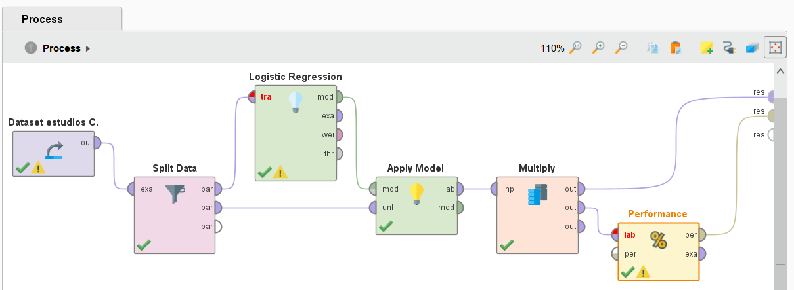Podemos ver en en la 2da columna se encuentra el valor de prediccion correcto y en la 3ra se encuentra la prediccion del modelo. A su vez vemos que la prediccion depende de los coeficientes de Si 4ta columna y coeficiente de NO 5ta columna todo calculado a partir de los pesos de cada caracteristica de las columnas restantes.
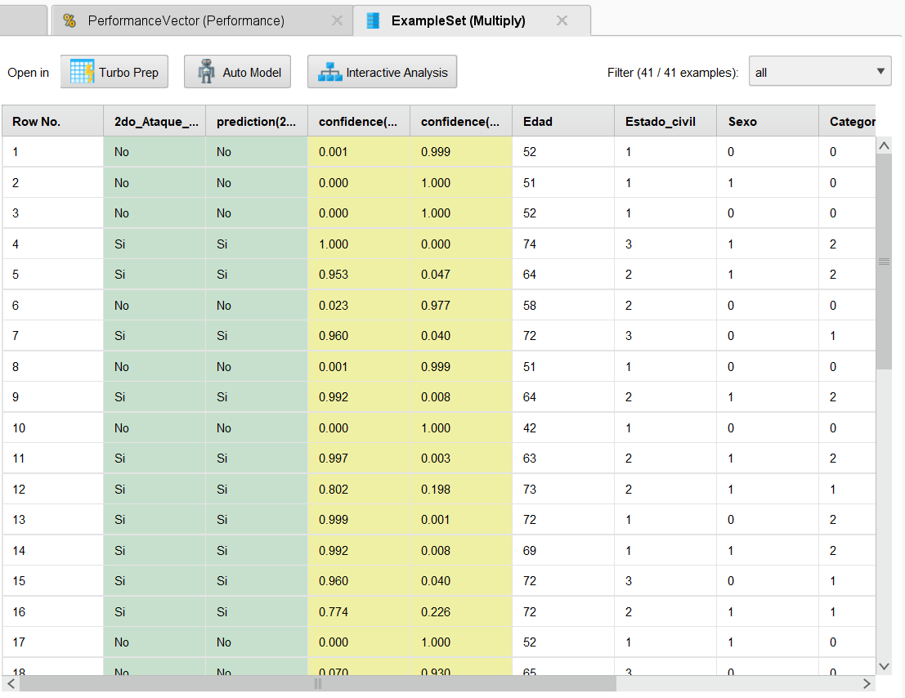Podemos ver que la precision de este modelo es de 92.68% lo cual es bastante bueno pero no es Perfecto. A su vez vemos que en dentro de los errores hay 2 falsos SI y 1 falso NO segun la matriz de confusion.
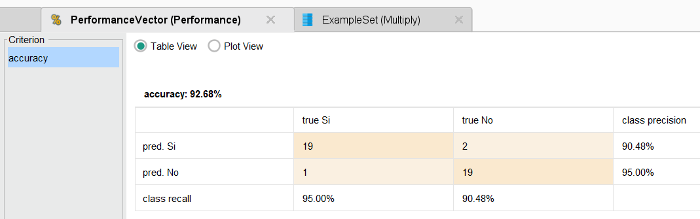La idea de este proyecto es generar un modelo de machine learning para predecir en base a las condiciones climaticas del campo de golf si podemos practicar o no el deporte.
Si bien podriamos haber usado nuevamente Regresion Logisitica debemos usar Naibe Bayes debido al volumen limitado de datos de 14 tuplas.
El modelo consiste de el dataset de entrenamiento "Golf", el dataset de test "Golf-TestSet", ambos son tratatos por el operador "Numerical to polinomial" que convierte las caracteristicas numericas en polinomiales.
Luego el dataset de entrenamiento se usa para entrenar la caja negra de "Naive Bayes" y se aplica el modelo en "Apply Model" con el dataset de test.
Por ultimo se mide la eficiencia con el operador Performance y presentamos los resultados hacia afuera.
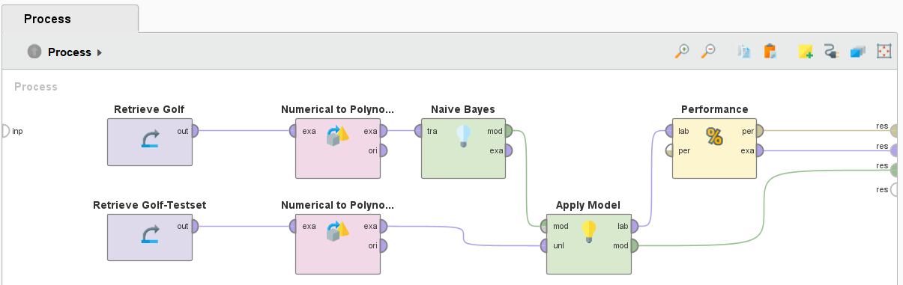Podemos ver en en la 2da columna se encuentra el valor de prediccion correcto y en la 3ra se encuentra la prediccion del modelo. A su vez vemos que la prediccion depende de los coeficientes de Si 4ta columna y coeficiente de NO 5ta columna todo calculado a partir de los pesos de cada caracteristica de las columnas restantes.
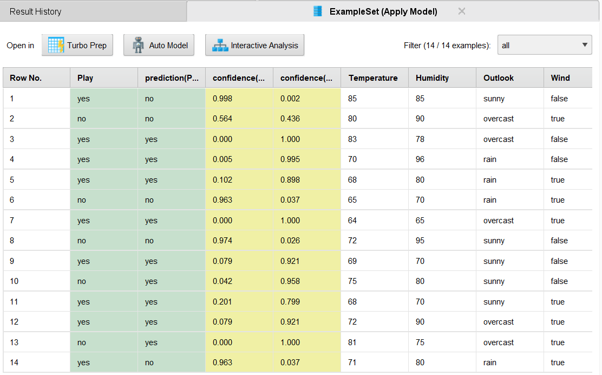En comparacion al proyecto de regresión lineal la precision es menor pero considerando la poca cantidad de datos es un buen resultado ya que el modelo no se desajusto.
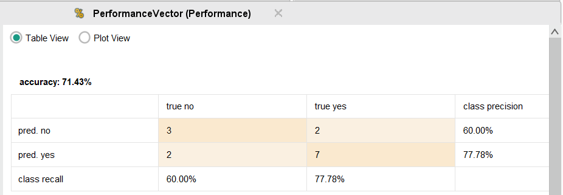Al dejar las caracteristicas numericas sin convertirlas a polinomiales podemos ver que la precision decae drasticamente empeorando el modelo y reflejando la importancia de las tareas de preparacion de datos.
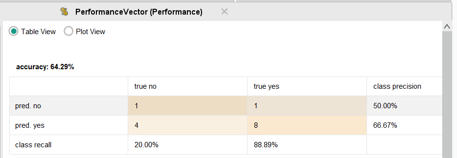La idea de este proyecto es aplicar el algortimo KNN para generar un modelo de machine learning.
La eleccion de knn se da para este modelo por la poca cantidad de datos, 447 tuplas y porque la variable objetivo es multivariable puediendo ser uno de 4 deportes posibles y necesitando calcular un coeficiente para cada una de estos deportes.
El modelo consiste del dataset sport que pasa por el operador "Filter Examples" para eliminar outliers incoerentes.
Luego se setea el rol de "label" a la caracteristica deporte primario para que sea la variable objetivo del dataset.
Finalmente se manda al operador "Cross Validation" para correr el modelo varias veces mejorando un poco la eficiencia de este modelo.
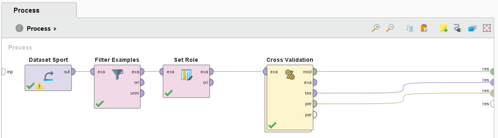En el "Cross Validation" corremos varias veces el algoritmo de KNN como caja negra segido de "Apply model" y "Performance" para medir la precision.
Por ultimo sacamos todo hacia afuera para ver los resultados.
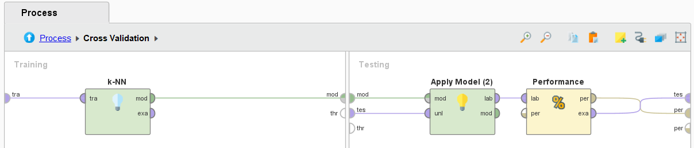Podemos ver en en la 2da columna se encuentra el valor de prediccion correcto y en la 3ra se encuentra la prediccion del modelo.
A su vez vemos que la prediccion depende de los coeficientes de que estan en la 4 a 7 columna cada una calcula el coeficiente para cada deporte posible.
A partir de la 8 columna estan las caracteristicas de los deportistas.
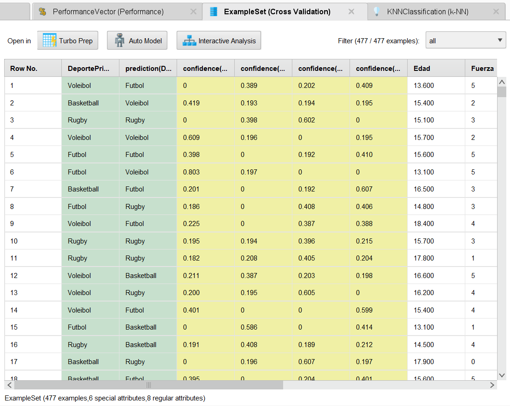Por lo que vemos la performance es terrible pero hay que considerar que son muchas deportes posibles, la cantidad de datos es poca y aun con todas las mejoras las prediciones no son buenas.
Para mejorarlo habria que poner muchos mas datos para ajustar el modelo, a la par hay que mejorar la preparacion de los datos seleccionando las caracteristias mas significativas y quitando mas outliers.
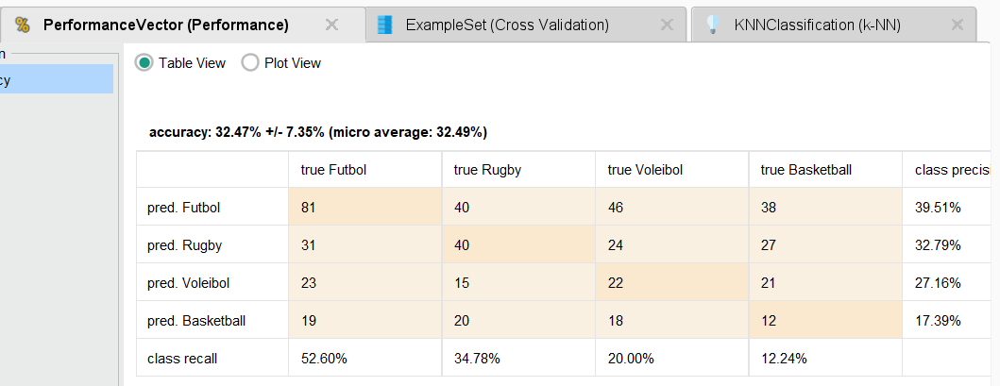En este proyecto queremos comparar diferentes metodos de seleccion de caracteristicas para ver los pros y cons de cada uno usando RapidMinner y un dataset con datos de un sonar para piedras y minerales.
Es el mas balanceado de los 3 no es el mas lento ni mas rapido pero tampoco es el mas preciso o impreciso
A su vez de los 60 atributos se quedo con tan solo 4
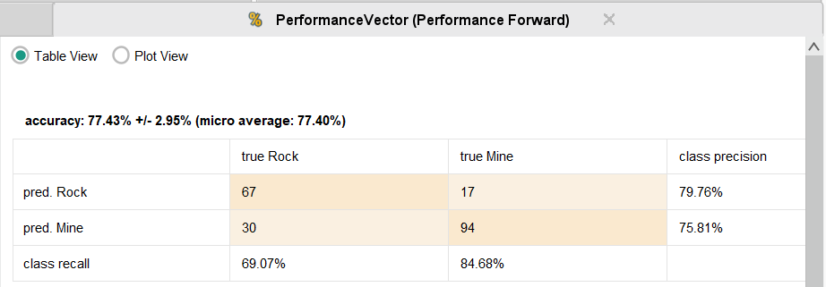Muy rapido de ejecutar pero fue el mas impreciso
A su vez de los 60 atributos tan solo descarto 8
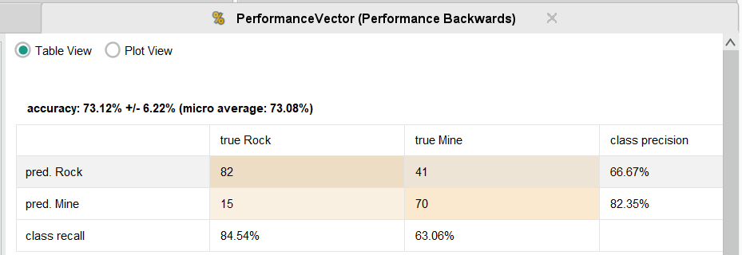Fue el mas lento de ejecutar de los 3 pero es el metodo mas preciso
A su vez de los 60 atributos se quedo con tan solo 9 mas que el Foward pero no exagero como el Backwards
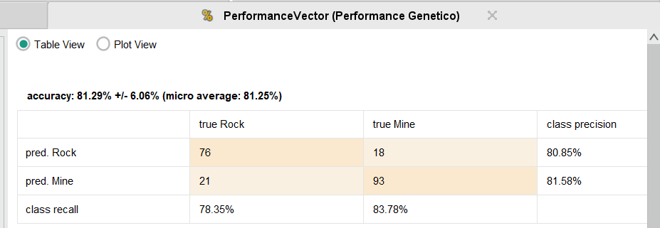En base a este proyecto podemos concluir que dependiendo de la cantidad de datos y la precision buscada debemos cambiar el algoritmo de seleccion de caracteristicas para mantener la eficiencia.